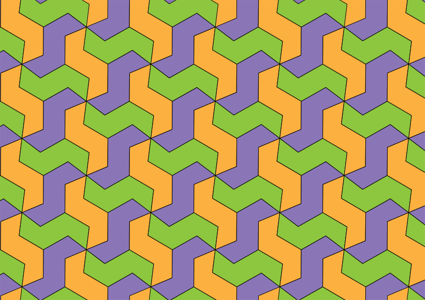
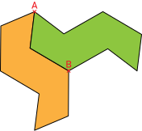

Activité Introduction
Une grande roue est installée sur les rives d'un fleuve. Elle tourne à une vitesse
constante dans le sens indiqué par les flèches et effectue un tour complet en 40 minutes
exactement.
-
Patrick commence son tour sur la grande roue au point d'embarquement P.
- Où se trouve Patrick au bout de 20 minutes ? De combien de degrés aura-t-il tourné ?
- Recopier et compléter la phrase : "La rotation de centre M et d'angle
..... transforme le point P en ...... ."
- Quelle autre transformation permet de passer du point P au point R ?
-
Patrick a commencé son tour depuis une demi-heure.
- Où se trouve-t-il maintenant ? De combien de degrés a-t-il tourné ?
- Recopier et compléter la phrase : "La rotation de centre M et d'angle
..... transforme le point P en ...... ."
- Quelle rotation transforme le point P en point Q ?
Définition et propriétés :
Définition :
Transformer un point (ou une figure) par rotation,
c'est faire tourner ce point (ou cette figure) par rapport à un centre de rotation,
d'un certain angle et dans une direction donnée.
Exemples :
Rotation d'un point

Rotation d'une figure

- Le point M' est l'image du point M par la rotation de centre O de 45° dans le sens anti-horaire.
- La figure A'B'C' est l'image de la figure ABC par la rotation de centre O de 60° dans le sens anti-horaire.
Propriétés :
Propriété :
La rotation conserve les longueurs et les angles.
Propriété :
L'image du centre de rotation est lui-même quels que soient l'angle et le sens de rotation.
Remarque :
Le centre de rotation (souvent noté O) est dit invariant.
Propriété :
Une rotation de 180° correspond à une symétrie centrale.
Géométrie :
Construction :
Construction de l'image du point M par la rotation de centre O de 50° dans le sens anti-horaire :
On place le rapporteur centré sur O et on oriente le 0 vers M.
L'angle est lu sur la couronne intérieure du rapporteur.
On reporte l'angle voulu et on reporte la distance OM grâce au compas.
Pavage :
Il est possible de repérer une rotation dans une figure tracée et particulièrement dans un pavage.

Ici le pavage est obtenu en effectuant la rotation du motif suivant de 120° ou 60° selon le centre choisi.
Le motif orange est l'image du motif vert par :
- La rotation de centre A de 60° dans le sens horaire.
- La rotation de centre B de 120° dans le sens anti-horaire.
